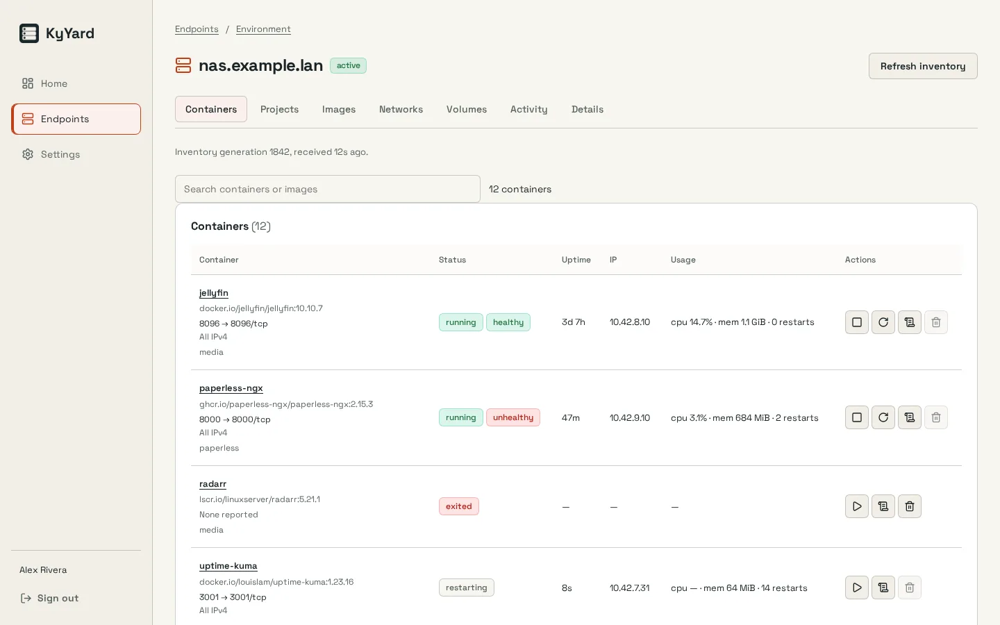
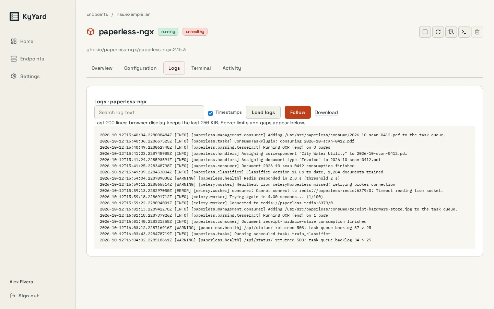

An operational foundation
The documented starting point includes a web interface, authentication, multi-factor authentication and identity integration.
KyYard / Infrastructure
KyYard is being built as a focused control plane for managing a container fleet, with identity and recovery in its foundation.
In developmentScreenshots


Inside KyYard
The documented starting point includes a web interface, authentication, multi-factor authentication and identity integration.
The foundation includes KyRecovery integration and local sealed backups. Current database-driver limits are documented in the repository.
Container management and agent enrollment are planned capabilities. They are the project's direction, not a claim of current feature completeness.
How it fits together
Check the current implementation plan and supported recovery paths before relying on an installation. The documented sealed database backup currently supports SQLite.
Read the Busnes.app privacy policy. For data on an independently operated installation, contact its operator.
Next step
The project documentation is the place for current requirements and instructions.